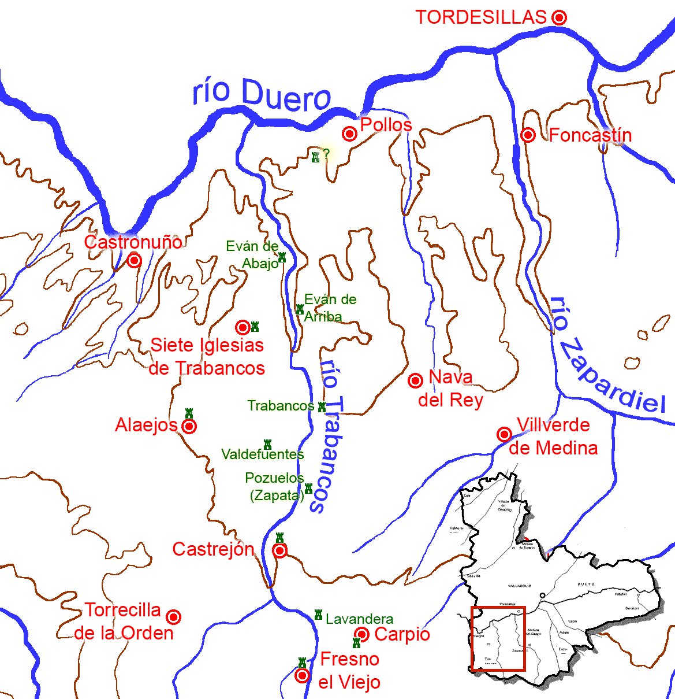

Orígenes y Edad Media
De los primeros pobladores del Trabancos a la aldea fronteriza de la Tierra de Medina: lo que se sabe, lo que se supone y lo que falta por averiguar.
No hay acta de nacimiento de Alaejos. José Ojeda Nieto, que dedicó más de veinte años a la historia de la villa, lo dejó escrito al despedirse de la revista de fiestas: lo más que se puede hacer es «irse acercando» (programa de 2013). Esta página reúne lo poco que se sabe de los primeros siglos, separa los datos de las conjeturas y señala lo que sigue en estudio.
Antes de la historia
Las huellas humanas más antiguas de la comarca están en las terrazas fluviales del río Trabancos, que corre a una legua al este del pueblo y en cuya orilla estuvo el lugar de Valdefuentes. De ellas proceden bifaces, núcleos y cantos tallados en cuarcita, atribuidos al Achelense, en el Paleolítico inferior: herramientas de cazadores y recolectores de hace cientos de miles de años.

De época romana, visigoda o musulmana no se conoce en Alaejos ningún resto ni documento. Adolfo M. Araujo imaginó en 1987 una villa romana de un tal Alejo, una explotación maderera goda y un castillo árabe, y él mismo advertía que de todo ello no había «documentos escritos» ni «vestigios arqueológicos» a la vista (programa de 1987). Ojeda recordaba que hay restos romanos en pueblos cercanos y que en Fuentelapeña se conservan galerías de agua de tradición islámica, los qanat, pero que en Alaejos todo eso está por demostrar.
El nombre
La forma más antigua conocida del nombre es Falafeios. El historiador de Medina Eufemio Lorenzo Sanz la documenta en 1180, y José Ojeda Nieto la identifica con el lugar que aparece en un documento de cesión de 1185, según recoge Antonio Lucas Varela (programa de 2007). En 2011 Ojeda citaba además una mención de 1157 como «Farafelios».
La evolución hasta la forma actual se explica bien por la fonética del castellano: la f- inicial se aspira y se pierde, como en facer > hacer, y el nombre pasa por Halaheyos y Alaexos hasta Alaejos. La equis se pronunciaba como una sh; así lo escribió Cervantes en El licenciado Vidriera, y la grafía con jota no se fijó hasta que la Real Academia cambió la ortografía en 1815 (Fernando Benito Álvarez, programa de 2013).
Lo que no se sabe es qué significa. Se han propuesto varias explicaciones:
- Un diminutivo de Alafes, topónimo de la zona de Benavente, que vendría de una palabra para la alfalfa o el esparto: «el pequeño alfalfar» (Eufemio Lorenzo, con reservas).
- Un nombre de árboles, de la familia del gallego salgueiro o del castellano saucedo, en tierra de sauces y saúcos, que sería obra de repobladores gallegos (Antonio Lucas Varela, 2007).
- Un origen árabe. Ya en el siglo XVI el padre Guadix decía que Alaexos significaba «peregrinos», explicación que el propio Lucas Varela califica de simplista.
Noé León lo resumió con prudencia: «demostrar la evolución de una palabra no significa probar el origen de una población» (programa de 2024).
La repoblación: una aldea de frontera
Tras la conquista de Toledo por Alfonso VI en 1085, los reyes impulsaron la repoblación de las tierras al sur del Duero, la llamada Extremadura castellana. Según Noé León, Alaejos debió de repoblarse de forma firme a finales del siglo XI o a comienzos del XII, con gentes del norte apoyadas por el concejo de Medina del Campo. Antonio Lucas Varela cree que buena parte de los pobladores eran gallegos, leoneses y mozárabes llegados por la Vía de la Plata, y lo relaciona con palabras locales de origen árabe como alcacer, almocafre o arrecájel y con topónimos como el Morisquillo o Perromoro.
La aldea quedó integrada en la Comunidad de Villa y Tierra de Medina del Campo, con sus aldeas y despoblados —entre ellos Trabancos, Valdefuentes, Pozuelos o San Juan de Vadillo— (Adelio Castaño, programa de 1988). En lo eclesiástico perteneció al obispado de Salamanca hasta que en 1595 se creó el de Valladolid.
Su posición era delicada. Cuando Alfonso VII dividió sus reinos en 1157, Medina y sus aldeas quedaron en Castilla, y muy cerca, hacia la Guareña y las tierras de Toro, empezaba el reino de León. Entre 1113 y 1117 la reina Urraca había entregado a la Orden de San Juan los lugares leoneses de la Guareña —Paradinas, La Bóveda, Vadillo, Fuentelapeña, Cañizal— para frenar el avance de los de Medina. Por eso el curso del Trabancos se llenó de torres y fortalezas, como la de Valdefuentes, fechada en el siglo XII.


Araujo recoge que en 1191 Alfonso IX de León, en guerra con Castilla, arrasó pueblos de la comarca y que «cae Alaejos», y que la paz no llegó de verdad a la frontera hasta que Fernando III unió los dos reinos en 1230. Son noticias de su artículo de 1987, sin cita de la fuente documental.
Los cuatro linajes
Una huella de aquella organización medieval duró hasta el siglo XIX. Como en Medina del Campo, todos los vecinos de Alaejos, hidalgos y pecheros, clérigos y labradores, pertenecían a uno de cuatro linajes: Gil Domínguez, Martín García, Garroberos y Elenos. A la hora de proponer alcaldes y regidores, cada linaje se colocaba en una esquina de la Plaza Mayor y su miembro más viejo, y después el regidor saliente, elegía a tres vecinos, uno hidalgo y dos pecheros, entre los que la autoridad nombraba a los cargos (Noé León, programas de 2019 y 2024). Noé León ve en esos linajes «incluyentes», que agrupaban a todo el vecindario, un rasgo propio de la libertad de las comunidades de villa y tierra.
Entre bandos: el siglo XV
En las guerras civiles del reinado de Juan II, Alaejos aparece como base de algunos de los grandes del reino. Según Araujo y José Sánchez Poncela (programa de 1993), aquí estuvieron aposentados el infante don Enrique de Aragón y el almirante de Castilla, y desde Alaejos salió el infante una noche hacia Tordesillas para prender a dos señores de la corte. Araujo añade que gentes de Alaejos combatieron en la batalla de Olmedo de 1445.
Adelio Castaño recoge que en 1350 Alfonso XI dio carta de venta de Alaejos a su camarero Diego Fernández de Medina. Pero el cambio decisivo llegó en 1452: el príncipe Enrique, el futuro Enrique IV, separó Alaejos de la Tierra de Medina, con Castrejón y Valdefuentes, y la entregó a Alonso de Fonseca, obispo de Ávila. Medina lo recordó siempre como una pérdida. Empezaba así el señorío, que se cuenta en la página siguiente.
Para seguir leyendo
- En la biblioteca de los programas: Noé León, «De los orígenes en el reino de Castilla» (2024); Antonio Lucas Varela, «Alaejos» (2007); Adolfo M. Araujo, «Los señores de Alaejos hasta los Trastámaras» (1987); José Ojeda Nieto, «Temas pendientes de la historia de Alaejos» (2013); Adelio Castaño, «Toponimia del término municipal de Alaejos» (1989).
- José Ojeda Nieto, Alaejos, un pueblo de Castilla la Vieja en la España del siglo XVI (Valladolid, Diputación, 1989) y Alaejos, apuntes histórico-artísticos (Valladolid, Diputación, 1991).
- Eufemio Lorenzo Sanz (dir.), Historia de Medina del Campo y su Tierra, vol. 1 (Valladolid).
- Tomás Mañanes y Felipe Valbuena, «Torres y fortalezas medievales al sur del Duero en la provincia de Valladolid», Boletín del Seminario de Estudios de Arte y Arqueología, 43 (1977), pp. 111–126.